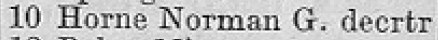
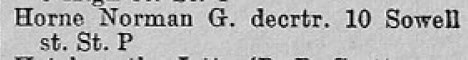
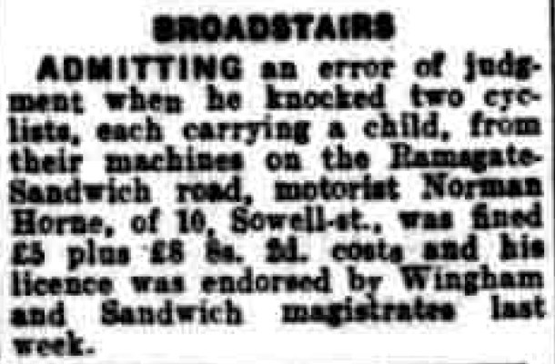
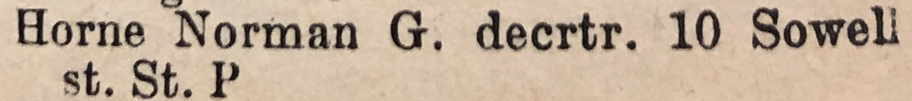
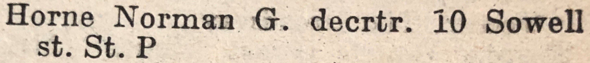

Norman George Horne 1916 - 1998
[ Home ] | [ Calendar ] | [ Surnames Index ] | [ Family History ]A painter & decorator and the younger of 2 children of Isaac Horne (a gardener domestic servant) and Lucy Stockbridge (a dressmaker), Norman Horne, the first cousin twice-removed on the father's side of <a href="I1.html">Nigel Horne</a>, was born in Broadstairs, Kent, England on Jul 2, 1916<span class="citation">1,2,3,4</span> and. He married Mabel White (with whom he had 2 surviving children <a href="I2091.html">Beryl C</a> and <a href="I2092.html">Margaret J</a>) at Salem Baptist Church, St Peters, Thanet, Kent, England on Aug 5, 1937<span class="citation">5</span>.</p><p>Norman spent all of his life in Kent, England. Throughout his life, he lived in several places around the county: on The Cottage, Fairfield Road, St Peters in Thanet on Jun 19, 1921<span class="citation">11</span>; on 8 Upton Road in Broadstairs on Sep 29, 1939<span class="citation">1</span>; on Sowell Street, St Peters in Thanet in 1953<span class="citation">8</span>; and at 10 Sowell Street, St Peters in Thanet in 1955<span class="citation">6</span>, in 1963<span class="citation">9</span>, in 1965<span class="citation">7</span> and in 1974<span class="citation">10</span>. <p>He died on Jul 24, 1998 in Broadstairs<span class="citation">2,4</span>.
Parents
- Isaac was born on Jun 18, 1867
- Lucy was born on Apr 11, 1875
Citations
- 1939 Register - Findmypast (was recorded at this address)
- England & Wales deaths 1837-2007 - Findmypast
- England & Wales, Birth Index: 1916-2005 Online publication - Provo, UT, USA: The Generations Network, Inc., 2008.Original data - General Register Office. England and Wales Civil Registration Indexes. London, England: General Register Office. © Crown copyright. Published by permission of the Cont
- England & Wales, Death Index: 1984-2005 Online publication - Provo, UT, USA: The Generations Network, Inc., 2007.Original data - General Register Office. England and Wales Civil Registration Indexes. London, England: General Register Office. © Crown copyright. Published by permission of the Cont
- England & Wales Marriages 1837-2005 - Findmypast
- 1955 Kelly's Thanet Directory
- 1965 Kelly's Thanet Directory
- 1953 Kelly's Thanet Directory
- 1963 Kelly's Thanet Directory
- 1974 Kelly's Thanet Directory
- 1921 Census Of England & Wales - Findmypast (was age 4 and the son of the head of the household)
Media
Thanet Advertiser - 10 August 1937

1955 Kelly's Thanet Directory

1965 Kelly's Thanet Directory

Kentish Express - 5 Aug 1960

1953 Kelly's Thanet Directory

1963 Kelly's Thanet Directory

1974 Kelly's Thanet Directory

England & Wales births 1837-2006 - BMD/B/1916/3/AZ/000679/040
England & Wales marriages 1837-2008 - BMD/M/1937/3/AZ/000813/138
England & Wales deaths 1837-2007 - BMD/D/1998/7/82572697
1939 Register Transcription - TNA-R39-1685-1685K-027-33
1921 Census of England & Wales - GBC/1921/RG15/04458/0261/04
Family Tree

Generated by Ged2Site. Last updated on Jul 20, 2025